MyBatis学习笔记
回顾之前学习过的一些知识：
- JDBC
- MySQL
- Java基础
- maven
- junit
SSM框架：配置文件的。最好的方式是看官方文档
1、 简介
1.1 什么是？
是一款优秀的持久层框架
它支持自定义 SQL、存储过程以及高级映射。
免除了几乎所有的 JDBC 代码以及设置参数和获取结果集的工作。
可以通过简单的 XML 或注解来配置和映射原始类型、接口和 Java POJO（Plain Old Java Objects，普通老式 Java 对象）为数据库中的记录。
本是apache的一个开源项目iBatis, 2010年这个项目由apache software foundation 迁移到了google code，并且改名为 。
2013年11月迁移到Github。
如何获得？
maven仓库：https://mvnrepository.com/artifact/org.//3.5.7
1
2
3
4
5
6
7<!-- https://mvnrepository.com/artifact/org.mybatis/mybatis -->
<dependency>
<groupId>org.mybatis</groupId>
<artifactId>mybatis</artifactId>
<version>3.5.7</version>
</dependency>中文文档地址：https://.org/-3/zh/index.html
1.2 持久化
数据持久化
- 持久化就是将程序的数据在持久状态和瞬时状态转化的过程
- 内存：断电即失
- 数据库（JDBC），io文件持久化
- 生活中：冷藏、罐头
为什么需要持久化？
- 有一些对象，不能把它丢掉
- 内存太贵了
1.3 持久层
Dao层、Service层、Controller层….
- 完成持久化的代码块
- 层界限十分明显
1.4 为什么用？
- 方便
- 帮助程序员将数据存入到数据库中
- 传统的JDBC太复杂了。简化、框架、自动化
- 不用也可以，更容易上手，技术没有高低之分
- 优点
- 简单易学
- 灵活
- sql和代码的分离，提高了可维护性。
- 提供映射标签，支持对象与数据库的orm字段关系映射
- 提供对象关系映射标签，支持对象关系组建维护
- 提供xml标签，支持编写动态sql。
最重要的一点：使用的人多！！！
Spring SpringMVC SpringBoot
2、 第一个程序
思路：搭建环境–>导入–>编写代码–>测试！
抑制警告的方法
1 | |
2.1 搭建环境
搭建数据库
1 | |
新建项目
新建一个普通的maven项目
删除src目录
导入maven依赖
1
2
3
4
5
6
7
8
9
10
11
12
13
14
15
16
17
18
19
20
21
22
23
24
25
26
27
28
29
30
31
32
33
34
35
36
37<?xml version="1.0" encoding="UTF-8"?>
<project xmlns="http://maven.apache.org/POM/4.0.0"
xmlns:xsi="http://www.w3.org/2001/XMLSchema-instance"
xsi:schemaLocation="http://maven.apache.org/POM/4.0.0 http://maven.apache.org/xsd/maven-4.0.0.xsd">
<modelVersion>4.0.0</modelVersion>
<!-- 父工程 -->
<groupId>cn.nyist.edu</groupId>
<artifactId>MybatisStudy</artifactId>
<version>1.0-SNAPSHOT</version>
<properties>
<maven.compiler.source>15</maven.compiler.source>
<maven.compiler.target>15</maven.compiler.target>
</properties>
<!-- 导入依赖-->
<dependencies>
<!-- mysql驱动-->
<dependency>
<groupId>mysql</groupId>
<artifactId>mysql-connector-java</artifactId>
<version>5.1.47</version>
</dependency>
<!-- mybatis-->
<dependency>
<groupId>org.mybatis</groupId>
<artifactId>mybatis</artifactId>
<version>3.5.2</version>
</dependency>
<!-- junit-->
<dependency>
<groupId>junit</groupId>
<artifactId>junit</artifactId>
<version>4.13</version>
</dependency>
</dependencies>
</project>
2.2 创建一个模块
编写的核心配置文件
创建文件-config.xml
1
2
3
4
5
6
7
8
9
10
11
12
13
14
15
16
17
18
19
20<?xml version="1.0" encoding="UTF-8" ?>
<!DOCTYPE configuration
PUBLIC "-//mybatis.org//DTD Config 3.0//EN"
"http://mybatis.org/dtd/mybatis-3-config.dtd">
<!--核心配置文件-->
<configuration>
<!-- 环境-->
<environments default="development">
<environment id="development">
<transactionManager type="JDBC"/>
<dataSource type="POOLED">
<property name="driver" value="com.mysql.jdbc.Driver"/>
<property name="url" value="jdbc:mysql://localhost:3306/mybatis?serverTimezone=GMT%2B8&useSSL=true&useUnicode=true&characterEncoding=UTF-8"/>
<property name="username" value="root"/>
<property name="password" value="123456"/>
</dataSource>
</environment>
</environments>
</configuration>编写工具类
1
2
3
4
5
6
7
8
9
10
11
12
13
14
15
16
17
18
19
20
21
22
23
24
25
26
27
28
29
30
31
32
33
34
35
36
37
38
39
40
41
42
43
44package cn.nyist.edu.utils;
import org.apache.ibatis.io.Resources;
import org.apache.ibatis.session.SqlSession;
import org.apache.ibatis.session.SqlSessionFactory;
import org.apache.ibatis.session.SqlSessionFactoryBuilder;
import java.io.IOException;
import java.io.InputStream;
import java.net.PortUnreachableException;
/**
* Description:
*
* @author 张志鹏
* @date 2021/11/26 21:33
* @email p2hemia@nyist.edu.cn
**/
//sqlSessionFactory -->sqlSession
public class MybatisUtils {
private static SqlSessionFactory sqlSessionFactory;
static {
try {
//使用Mybatis第一步：获取sqlSessionFactory对象
String resource = "mybatis-config.xml";
InputStream inputStream = Resources.getResourceAsStream(resource);
sqlSessionFactory = new SqlSessionFactoryBuilder().build(inputStream);
} catch (IOException e) {
e.printStackTrace();
}
}
//既然有了 SqlSessionFactory，顾名思义，我们可以从中获得 SqlSession 的实例。
// SqlSession 提供了在数据库执行 SQL 命令所需的所有方法
public static SqlSession getsqlSession() {
SqlSession sqlSession = sqlSessionFactory.openSession();
// return sqlSessionFactory.openSession(); 优化写法
return sqlSession;
}
}
2.3 编写代码
实体类
1
2
3
4
5
6
7
8
9
10
11
12
13
14
15
16
17
18
19
20
21
22
23
24
25
26
27
28
29
30
31
32
33
34
35
36
37
38
39
40
41
42
43
44
45
46
47
48
49
50
51
52
53
54
55
56
57
58package cn.nyist.edu.pojo;
/**
* Description:
*
* @author 张志鹏
* @date 2021/11/27 8:07
* @email p2hemia@nyist.edu.cn
**/
public class User {
private int id;
private String name;
private String pwd;
public User(int id, String name, String pwd) {
this.id = id;
this.name = name;
this.pwd = pwd;
}
public User() {
}
public int getId() {
return id;
}
public void setId(int id) {
this.id = id;
}
public String getName() {
return name;
}
public void setName(String name) {
this.name = name;
}
public String getPwd() {
return pwd;
}
public void setPwd(String pwd) {
this.pwd = pwd;
}
@Override
public String toString() {
return "User{" +
"id=" + id +
", name='" + name + '\'' +
", pwd='" + pwd + '\'' +
'}';
}
}Dao接口
1
2
3
4
5
6
7
8
9
10
11
12
13
14
15
16
17
18package cn.nyist.edu.dao;
import cn.nyist.edu.pojo.User;
import java.awt.*;
import java.util.List;
/**
* Description:
*
* @author 张志鹏
* @date 2021/11/27 8:12
* @email p2hemia@nyist.edu.cn
**/
public interface UserDao {
List<User> getUserList();
}接口实现类，由原来的UserDaoImpl转变成一个Mapper配置文件
1
2
3
4
5
6
7
8
9
10
11
12<?xml version="1.0" encoding="UTF-8" ?>
<!DOCTYPE mapper
PUBLIC "-//mybatis.org//DTD Mapper 3.0//EN"
"http://mybatis.org/dtd/mybatis-3-mapper.dtd">
<!--namespace- - -绑定一个Dao/Mapper接口-->
<!--<mapper namespace="org.mybatis.example.BlogMapper">-->
<mapper namespace="cn.nyist.edu.dao.UserDao">
<!-- select查询语句 id就是绑定方法的名字-->
<select id="getUserList" resultType="cn.nyist.edu.pojo.User">
select * from mybatis.user
</select>
</mapper>
2.4 测试
注意点：
org.apache.ibatis.binding.BindingException: Type interface cn.nyist.edu.dao.UserDao is not known to the MapperRegistry.
MapperRegistry是什么？
核心配置文件中注册mappers
junit测试
1
2
3
4
5
6
7
8
9
10
11
12
13
14
15
16
17
18
19
20
21public class UserDaoTest {
@Test
public void test() {
//第一步：获取sqlsession对象
SqlSession sqlSession = MybatisUtils.getsqlSession();
//方式1：getMapper 执行SQL
UserDao userdao = sqlSession.getMapper(UserDao.class);
List<User> userList = userdao.getUserList();
for (User user : userList) {
System.out.println(user);
}
//关闭sqlsession
sqlSession.close();
}
}
可能会遇到的问题
配置文件没有注册
绑定接口错误
方法名不对
返回类型不对
maven到处资源问题（约定大于配置）
1
2
3
4
5
6
7
8
9
10
11
12
13
14
15
16
17
18
19
20<!--在build中配置resources,来防止我们资源导出失败的问题-->
<build>
<resources>
<resource>
<directory>src/main/resources</directory>
<includes>
<include>**/*.properties</include>
<include>**/*.xml</include>
</includes>
</resource>
<resource>
<directory>src/main/java</directory>
<includes>
<include>**/*.properties</include>
<include>**/*.xml</include>
</includes>
<filtering>true</filtering>
</resource>
</resources>
</build>
基本步骤
1、导入maven依赖：MySQL驱动、依赖、junit依赖
2、配置核心配置文件：-config.xml
1 | |
3、编写工具类Utils获取sqlSessionFactory，来返回sqlsession
1 | |
4、编写实体类User：一定要写tostring方法
5、编写一个Dao（Mapper）接口
1 | |
6、编写Dao（Mapper）的实现类
1 | |
其中，namespace中为对应的接口所在类
其中，select中的id为接口类的方法名字
其中，resultType为SQL语句执行的返回值
其中，select中写的是SQL语句
7、编写测试类，对代码进行测试
1 | |
其中，第一步为获取Utils工具类中的sqlsession
其中，第二步为执行SQL语句，通过调用sqlsession中的getmapper方法，并且将Dao类的userDao传进去获取
其中，第三步为userdao调用getUserList方法，来获得执行SQL语句
其中，第四步为通过迭代循环将SQL语句中的select执行完毕
其中，第五步为关闭资源
3、 CRUD
3.1 namespace
namespace中的包名要和Dao/Mapper接口的包名一致
3.2 select
选择，查询语句
- id：就是对应的namespace中的方法名
- resultType：SQL语句执行的返回值！
- parameterType：参数类型！
编写接口
1
2//根据id查询用户
User getUserById(int id);编写对应的mapper中的SQL语句
1
2
3
4<!-- 按照id查找某个用户-->
<select id="getUserById" parameterType="int" resultType="cn.nyist.edu.pojo.User">
select * from mybatis.user where id=#{id}
</select>测试
1
2
3
4
5
6
7
8
9
10
11
12
13@Test
public void getUserById(){
//第一步：获取sqlsession对象
SqlSession sqlSession = MybatisUtils.getsqlSession();
UserMapper mapper = sqlSession.getMapper(UserMapper.class);
User user = mapper.getUserById(1);
System.out.println(user);
sqlSession.close();
}
3.3 Insert
编写接口
1
2//insert一个用户
int addUser(User user);编写对应的mapper中的SQL语句
1
2
3
4
5<!-- 对象中的属性，可以直接取出来-->
<!-- 添加一个用户-->
<insert id="addUser" parameterType="cn.nyist.edu.pojo.User">
insert into mybatis.user (id,name,pwd) values (#{id},#{name},#{pwd})
</insert>测试
1
2
3
4
5
6
7
8
9
10
11
12
13
14
15
16
17
18// 增删改需要提交事务
@Test
public void addUser() {
SqlSession sqlSession = MybatisUtils.getsqlSession();
UserMapper mapper = sqlSession.getMapper(UserMapper.class);
int user = mapper.addUser(new User(4, "鲁班七号", "123123"));
if(user>0) {
System.out.println("插入成功！");
}
// 提交事务
sqlSession.commit();
sqlSession.close();
}
3.4 Update
编写接口
1
2//修改用户
int updateUser(User user);编写对应的mapper中的SQL语句
1
2
3
4<!-- 修改一个用户的所有信息-->
<update id="updateUser" parameterType="cn.nyist.edu.pojo.User">
update mybatis.user set name=#{name},pwd=#{pwd} where id =#{id};
</update>测试
1
2
3
4
5
6
7
8
9
10@Test
public void updateUser() {
SqlSession sqlSession = MybatisUtils.getsqlSession();
UserMapper mapper = sqlSession.getMapper(UserMapper.class);
mapper.updateUser(new User(4,"小卤蛋","1234"));
sqlSession.commit();
sqlSession.close();
}
3.5 Delete
编写接口
1
2//删除一个用户
int deleteUser(int id);编写对应的mapper中的SQL语句
1
2
3
4<!-- 删除一个用户信息-->
<delete id="deleteUser" parameterType="int">
delete from mybatis.user where id=#{id}
</delete>测试
1
2
3
4
5
6
7
8
9@Test
public void deleteUser() {
SqlSession sqlSession = MybatisUtils.getsqlSession();
UserMapper mapper = sqlSession.getMapper(UserMapper.class);
mapper.deleteUser(4);
sqlSession.commit();
sqlSession.close();
}
3.6 增删改需要提交事务sqlSession.commit();
3.7 分析错误
- 标签不要匹配错
- resource绑定mapper，需要使用路径！
- 程序配置文件必须符合规范
- NullPointerException，没有注册到资源
- 输出的xml文件中存在中文乱码问题
- maven资源没有导出问题
3.8 万能的Map
假如，我们的实体类，或者数据库中的表，字段或者参数过多，我们应当考虑使用Map
mapper接口
1 | |
mapper实现类
1 | |
测试类
1 | |
Map传递参数，直接再sql中取出Map的Key即可！ 【parameterType=”map”】
对象传递参数，直接在sql中去对象的属性即可！ 【parameterType=”Object”】
只有一个基本类型参数的情况下，可以直接在sql中取到！
利用int一个参数的时候，就算不写也不会报错
parameterType=”int”多个参数用Map，或者用注解
利用Map传递参数相对于创建一个实体类节省资源
Mapper接口
1 | |
Mapper实现类
1 | |
测试类
1 | |
3.9 模糊查询
Java代码执行的时候，传递通配符% %
1
2
3
4
5
6
7
8
9
10@Test
public void getUserLike() {
SqlSession sqlSession = MybatisUtils.getsqlSession();
UserMapper mapper = sqlSession.getMapper(UserMapper.class);
List<User> userList = mapper.getUserLike("%李%");
for (User user : userList) {
System.out.println(user);
}
sqlSession.close();
}在sql拼接过程中使用通配符！
1
select * from mybatis.user where name like "%"#{value}"%"
以上就有两种方式，一种是在SQL拼接的时候加上%，将模糊查询直接写死，第二种是在执行的时候，通过传递通配符
4、 配置解析
4.1 核心配置文件
- -config.xml
- 的配置文件包含了会深深影响 行为的设置和属性信息。
- configuration（配置）
- properties（属性）
- settings（设置）
- typeAliases（类型别名）
- typeHandlers（类型处理器）
- objectFactory（对象工厂）
- plugins（插件）
- environments（环境配置）
- environment（环境变量）
- transactionManager（事务管理器）
- dataSource（数据源）
- environment（环境变量）
- databaseIdProvider（数据库厂商标识）
- mappers（映射器）
4.2 环境配置（environments）
可以配置成适应多种环境
不过要记住：尽管可以配置多个环境，但每个 SqlSessionFactory 实例只能选择一种环境。
要学会配置多套运行环境
默认的事务管理器是JDBC、默认的连接池是POOLED
1 | |
4.3 属性（properties）
我们可以通过properties属性来实现引用配置文件
这些属性可以在外部进行配置，并可以进行动态替换。你既可以在典型的 Java 属性文件中配置这些属性，也可以在 properties 元素的子元素中设置。【db.properties】
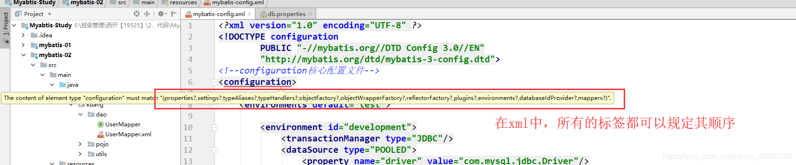
编写一个配置文件
db.properties
1 | |
在核心配置文件中映入
1 | |
核心配置文件
1 | |
- 可以直接引入外部文件
- 可以在其中增加一些属性配置
- 如果两个文件有同一个字段，优先使用外部配置文件的！
4.4 类型别名（typeAliases）
- 类型别名可为 Java 类型设置一个缩写名字。
- 它仅用于 XML 配置，意在降低冗余的全限定类名书写。
1 | |
也可以指定一个包名， 会在包名下面搜索需要的 Java Bean，比如：
扫描实体类的包，它的默认别名就为这个类的 类名，首字母小写！
1 | |
在实体类比较少的时候，使用第一种方式。
如果实体类十分多，建议使用第二种。
第一种可以DIY别名，第二种则·不行·，如果非要改，需要在实体上增加注解
1 | |
4.5 设置（settings）
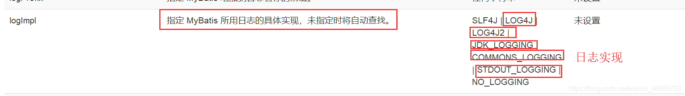
4.6 其他配置
- typeHandlers（类型处理器）
- objectFactory（对象工厂）
- plugins插件
- -generator-core
- -plus
- 通用mapper
4.7 映射器（mappers）
MapperRegistry：注册绑定我们的Mapper文件；
方式一： 【推荐使用】
1 | |
方式二：使用class文件绑定注册
1 | |
注意点：
- 接口和他的Mapper配置文件必须同名！
- 接口和他的Mapper配置文件必须在同一个包下！
方式三：使用扫描包进行注入绑定
1 | |
注意点：
- 接口和他的Mapper配置文件必须同名！
- 接口和他的Mapper配置文件必须在同一个包下！
练习时间：
- 将数据库配置文件外部引入
- 实体类别名
- 保证UserMapper 接口 和 UserMapper .xml 改为一致！并且放在同一个包下！
4.8 生命周期和作用域
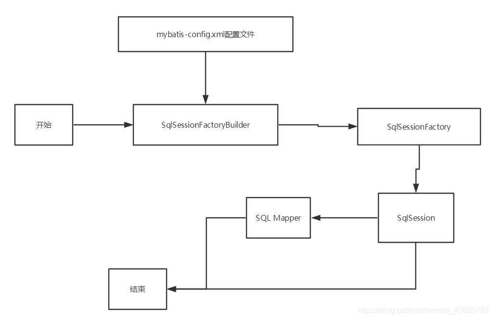
生命周期，和作用域，是至关重要的，因为错误的使用会导致非常严重的并发问题。
SqlSessionFactoryBuilder：
- 一旦创建了 SqlSessionFactory，就不再需要它了
- 局部变量
SqlSessionFactory：
- 说白了就是可以想象为 ：数据库连接池
- SqlSessionFactory 一旦被创建就应该在应用的运行期间一直存在，没有任何理由丢弃它或重新创建另一个实例。
- 因此 SqlSessionFactory 的最佳作用域是应用作用域。
- 最简单的就是使用单例模式或者静态单例模式。
SqlSession：
- 连接到连接池的一个请求！
- SqlSession 的实例不是线程安全的，因此是不能被共享的，所以它的最佳的作用域是请求或方法作用域。
- 用完之后需要赶紧关闭，否则资源被占用！
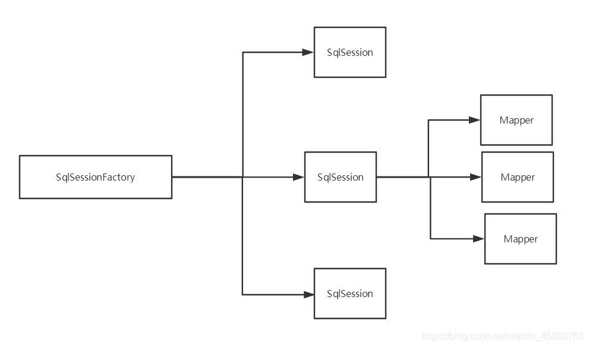
这里面的每一个Mapper，就代表一个具体的业务！
5、 解决属性名和字段名不一致的问题
5.1 问题
数据库中的字段
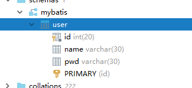
新建一个项目，拷贝之前的，测试实体类字段不一致的情况
1 | |
测试出现问题
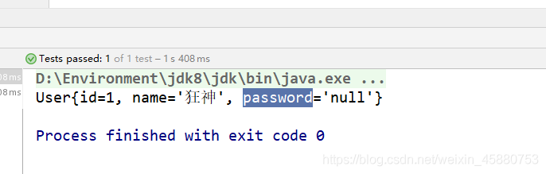
1 | |
解决方法：
起别名
1
2
3<select id="getUserById" resultType="com.kuang.pojo.User">
select id,name,pwd as password from mybatis.user where id = #{id}
</select>
5.2 resultMap
结果集映射
1 | |
resultMap元素是 中最重要最强大的元素- ResultMap 的设计思想是，对于简单的语句根本不需要配置显式的结果映射，而对于复杂一点的语句只需要描述它们的关系就行了。
ResultMap最优秀的地方在于，虽然你已经对它相当了解了，但是根本就不需要显式地用到他们。- 如果世界总是这么简单就好了。
6、 日志
6.1 日志工厂
如果一个数据库操作，出现了异常，我们需要排错。日志就是最好的助手！
曾经：sout 、debug
现在：日志工厂！
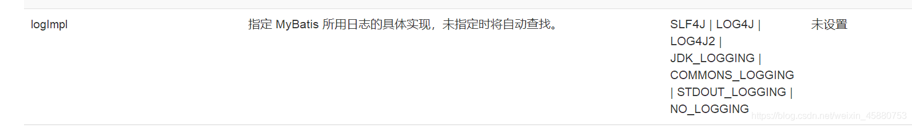
- SLF4J
- LOG4J 【掌握】
- LOG4J2
- JDK_LOGGING
- COMMONS_LOGGING
- STDOUT_LOGGING 【掌握】
- NO_LOGGING
在中具体使用那个一日志实现，在设置中设定！
STDOUT_LOGGING标准日志输出
在核心配置文件中，配置我们的日志！
1 | |
控制台输出结果
1 | |
6.2、Log4j
什么是Log4j？
- Log4j是Apache的一个开源项目，通过使用Log4j，我们可以控制日志信息输送的目的地是控制台、文件、GUI组件
- 我们也可以控制每一条日志的输出格式；
- 通过定义每一条日志信息的级别，我们能够更加细致地控制日志的生成过程。
- 通过一个配置文件来灵活地进行配置，而不需要修改应用的代码。
先导入log4j的包
1
2
3
4
5
6<!-- https://mvnrepository.com/artifact/log4j/log4j -->
<dependency>
<groupId>log4j</groupId>
<artifactId>log4j</artifactId>
<version>1.2.17</version>
</dependency>log4j.properties
1
2
3
4
5
6
7
8
9
10
11
12
13
14
15
16
17
18
19
20
21
22
23
24#将等级为DEBUG的日志信息输出到console和file这两个目的地，console和file的定义在下面的代码
log4j.rootLogger=DEBUG,console,file
#控制台输出的相关设置
log4j.appender.console = org.apache.log4j.ConsoleAppender
log4j.appender.console.Target = System.out
log4j.appender.console.Threshold=DEBUG
log4j.appender.console.layout = org.apache.log4j.PatternLayout
log4j.appender.console.layout.ConversionPattern=[%c]-%m%n
#文件输出的相关设置
log4j.appender.file = org.apache.log4j.RollingFileAppender
log4j.appender.file.File=./log/kuang.log
log4j.appender.file.MaxFileSize=10mb
log4j.appender.file.Threshold=DEBUG
log4j.appender.file.layout=org.apache.log4j.PatternLayout
log4j.appender.file.layout.ConversionPattern=[%p][%d{yy-MM-dd}][%c]%m%n
#日志输出级别
log4j.logger.org.=DEBUG
log4j.logger.java.sql=DEBUG
log4j.logger.java.sql.Statement=DEBUG
log4j.logger.java.sql.ResultSet=DEBUG
log4j.logger.java.sql.PreparedStatement=DEBUG配置log4j为日志的实现
1
2
3<settings>
<setting name="logImpl" value="Log4j"/>
</settings>Log4j的使用！，直接测试运行刚才的查询
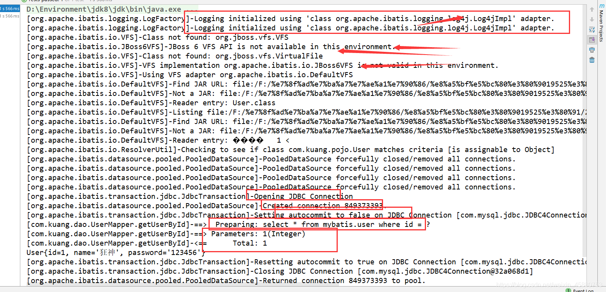
简单使用
在要使用Log4j 的类中，导入包 import org.apache.log4j.Logger;
日志对象，参数为当前类的class
1
static Logger logger = Logger.getLogger(UserDaoTest.class);日志级别
1
2
3logger.info("info:进入了testLog4j");
logger.debug("debug:进入了testLog4j");
logger.error("error:进入了testLog4j");
7、分页
思考：为什么要分页？
- 减少数据的处理量
7.1 使用Limit分页
1 | |
使用实现分页，核心SQL
接口
1
2//分页
List<User> getUserByLimit(Map<String,Integer> map);Mapper.xml
1
2
3
4<!--//分页-->
<select id="getUserByLimit" parameterType="map" resultMap="UserMap">
select * from mybatis.user limit #{startIndex},#{pageSize}
</select>测试
1
2
3
4
5
6
7
8
9
10
11
12
13
14
15
16
17@Test
public void getUserByLimit(){
SqlSession sqlSession = MybatisUtils.getSqlSession();
UserMapper mapper = sqlSession.getMapper(UserMapper.class);
HashMap<String, Integer> map = new HashMap<String, Integer>();
map.put("startIndex",1);
map.put("pageSize",2);
List<User> userList = mapper.getUserByLimit(map);
for (User user : userList) {
System.out.println(user);
}
sqlSession.close();
}
7.2 RowBounds分页
不再使用SQL实现分页
接口
1
2//分页2
List<User> getUserByRowBounds();mapper.xml
1
2
3
4<!--分页2-->
<select id="getUserByRowBounds" resultMap="UserMap">
select * from mybatis.user
</select>测试
1
2
3
4
5
6
7
8
9
10
11
12
13
14
15
16@Test
public void getUserByRowBounds(){
SqlSession sqlSession = MybatisUtils.getSqlSession();
//RowBounds实现
RowBounds rowBounds = new RowBounds(1, 2);
//通过Java代码层面实现分页
List<User> userList = sqlSession.selectList("com.kuang.dao.UserMapper.getUserByRowBounds",null,rowBounds);
for (User user : userList) {
System.out.println(user);
}
sqlSession.close();
}
7.3 分页插件
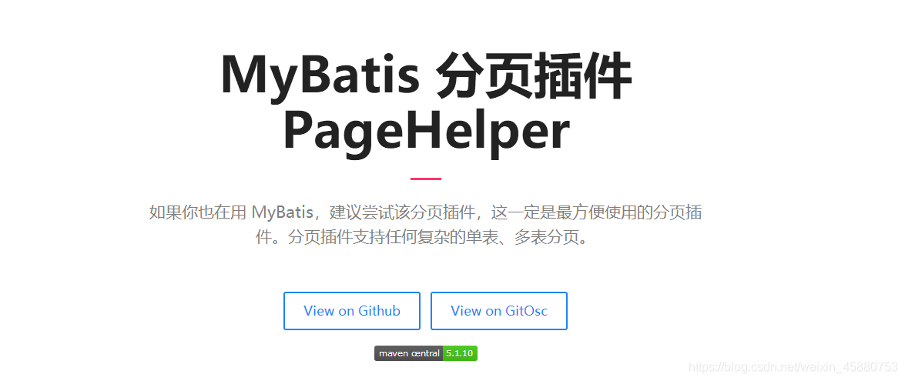
了解即可，万一 以后公司的架构师，说要使用，需要知道它是什么东西！
8、使用注解开发
8.1 面向接口编程
- 大家之前都学过面向对象编程，也学习过接口，但在真正的开发中，很多时候我们会选择面向接口编程
- 根本原因 : 解耦 , 可拓展 , 提高复用 , 分层开发中 , 上层不用管具体的实现 , 大家都遵守共同的标准 , 使得开发变得容易 , 规范性更好
- 在一个面向对象的系统中，系统的各种功能是由许许多多的不同对象协作完成的。在这种情况下，各个对象内部是如何实现自己的,对系统设计人员来讲就不那么重要了；
- 而各个对象之间的协作关系则成为系统设计的关键。小到不同类之间的通信，大到各模块之间的交互，在系统设计之初都是要着重考虑的，这也是系统设计的主要工作内容。面向接口编程就是指按照这种思想来编程。
关于接口的理解
- 接口从更深层次的理解，应是定义（规范，约束）与实现（名实分离的原则）的分离。
- 接口的本身反映了系统设计人员对系统的抽象理解。
- 接口应有两类：
- 第一类是对一个个体的抽象，它可对应为一个抽象体(abstract class)；
- 第二类是对一个个体某一方面的抽象，即形成一个抽象面（interface）；
- 一个体有可能有多个抽象面。抽象体与抽象面是有区别的。
三个面向区别
- 面向对象是指，我们考虑问题时，以对象为单位，考虑它的属性及方法 .
- 面向过程是指，我们考虑问题时，以一个具体的流程（事务过程）为单位，考虑它的实现 .
- 接口设计与非接口设计是针对复用技术而言的，与面向对象（过程）不是一个问题.更多的体现就是对系统整体的架构
8.2 使用注解开发
注解在接口上实现
1
2@Select("select * from user")
List<User> getUsers();需要再核心配置文件中绑定接口！
1
2
3
4<!--绑定接口-->
<mappers>
<mapper class="com.kuang.dao.UserMapper"/>
</mappers>测试
本质：反射机制实现
底层：动态代理！
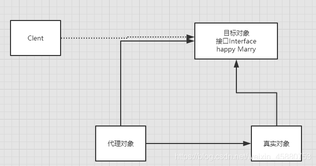
详细的执行流程！
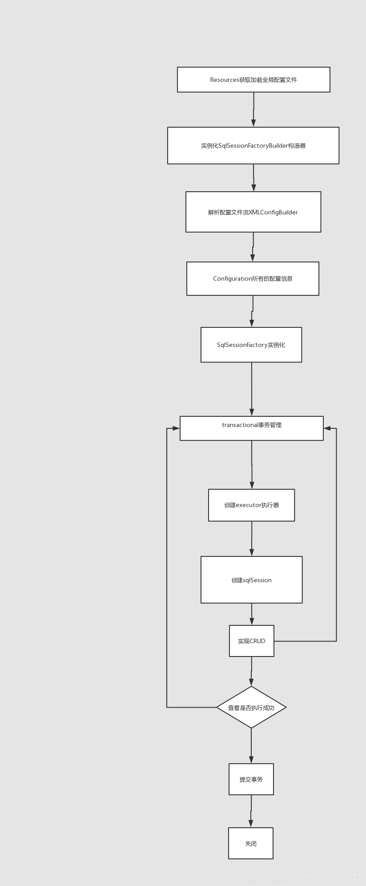
8.3 CRUD
我们可以在工具类创建的时候实现自动提交事务！
1 | |
编写接口，增加注解
1 | |
测试类
【注意：我们必须要讲接口注册绑定到我们的核心配置文件中！】
关于@Param() 注解
- 基本类型的参数或者
String类型，需要加上 - 引用类型不需要加
- 如果只有一个基本类型的话，可以忽略，但是建议大家都加上！
- 我们在
SQL中引用的就是我们这里的@Param()中设定的属性名！
#{} 和${} 区别
9、Lombok
1 | |
- java library
- plugs
- build tools
- with one annotation your class
使用步骤：
在IDEA中安装Lombok插件！
在项目中导入lombok的jar包
1
2
3
4
5
6
7<!-- https://mvnrepository.com/artifact/org.projectlombok/lombok -->
<dependency>
<groupId>org.projectlombok</groupId>
<artifactId>lombok</artifactId>
<version>1.18.20</version>
<scope>provided</scope>
</dependency>在实体类上加注解即可！
1
2
3//@Data
//@AllArgsConstructor
//@NoArgsConstructor
1 | |
说明：
1 | |
Lombok的优缺点
优点
- 能通过注解的形式自动生成构造器、
getter/setter、equals、hashcode、toString等方法，提高了一定的开发效率 - 让代码变得简洁，不用过多的去关注相应的方法
- 属性做修改时，也简化了维护为这些属性所生成的
getter/setter方法等
缺点
- 不支持多种参数构造器的重载
- 虽然省去了手动创建
getter/setter方法的麻烦，但大大降低了源代码的可读性和完整性，降低了阅读源代码的舒适度
10、多对一处理
多对一：
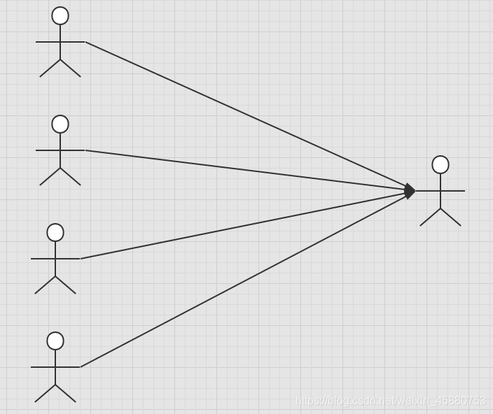
- 多个学生，对应一个老师
- 对于学生这边而言， 关联 … 多个学生，关联一个老师 【多对一】
- 对于老师而言， 集合 ， 一个老师，有很多学生 【一对多】
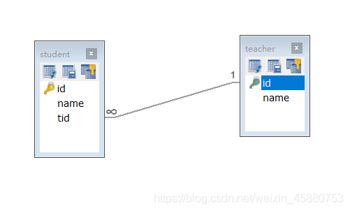
SQL：
1 | |
测试环境搭建
- 导入lombok
- 新建实体类 Teacher，Student
- 建立Mapper接口
- 建立Mapper.XML文件
- 在核心配置文件中绑定注册我们的Mapper接口或者文件！【方式很多，随心选】
- 测试查询是否能够成功！
按照查询嵌套处理
1 | |
按照结果嵌套处理
1 | |
回顾Mysql 多对一查询方式：
- 子查询
- 联表查询
11、一对多处理
比如：一个老师拥有多个学生！
对于老师而言，就是一对多的关系!
环境搭建
- 环境搭建，和刚才一样
实体类
1 | |
按照结果嵌套处理
1 | |
按照查询嵌套处理
1 | |
小结
- 关联 - association 【多对一】
- 集合 - collection 【一对多】
- javaType & ofType
- JavaType 用来指定实体类中属性的类型
- ofType 用来指定映射到List或者集合中的 pojo类型，泛型中的约束类型！
注意点：
- 保证SQL的可读性，尽量保证通俗易懂
- 注意一对多和多对一中，属性名和字段的问题！
- 如果问题不好排查错误，可以使用日志 ， 建议使用 Log4j
慢SQL 1s 1000s
面试高频
- Mysql引擎
- InnoDB底层原理
- 索引
- 索引优化！
12、动态 SQL
什么是动态SQL：动态SQL就是指根据不同的条件生成不同的SQL语句
利用动态 SQL 这一特性可以彻底摆脱这种痛苦。
1 | |
搭建环境
1 | |
创建一个基础工程
导包
编写配置文件
编写实体类
1
2
3
4
5
6
7
8
9
10@Data
public class Blog {
private int id;
private String title;
private String author;
private Date createTime;
private int views;
}编写实体类对应Mapper接口 和 Mapper.XML文件
IF
1 | |
choose (when, otherwise)
1 | |
trim (where,set)
1 | |
所谓的动态SQL，本质还是SQL语句 ， 只是我们可以在SQL层面，去执行一个逻辑代码
if
where ， set ， choose ，when
SQL片段
有的时候，我们可能会将一些功能的部分抽取出来，方便复用！
使用SQL标签抽取公共的部分
1
2
3
4
5
6
7
8<sql id="if-title-author">
<if test="title != null">
title = #{title}
</if>
<if test="author != null">
and author = #{author}
</if>
</sql>在需要使用的地方使用Include标签引用即可
1
2
3
4
5
6<select id="queryBlogIF" parameterType="map" resultType="blog">
select * from mybatis.blog
<where>
<include refid="if-title-author"></include>
</where>
</select>
注意事项：
- 最好基于单表来定义SQL片段！
- 不要存在where标签
Foreach
1 | |
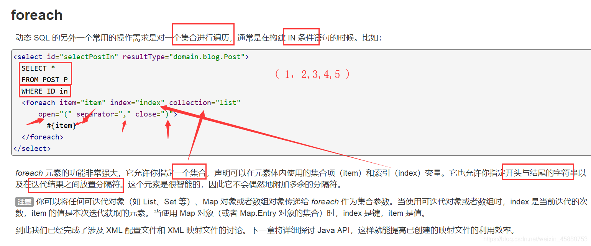
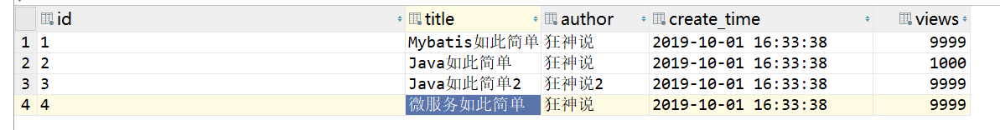
1 | |
动态SQL就是在拼接SQL语句，我们只要保证SQL的正确性，按照SQL的格式，去排列组合就可以了
建议：
- 现在Mysql中写出完整的SQL,再对应的去修改成为我们的动态SQL实现通用即可！
13、缓存 （了解）
13.1 简介
1 | |
- 什么是缓存 [ Cache ]？
- 存在内存中的临时数据。
- 将用户经常查询的数据放在缓存（内存）中，用户去查询数据就不用从磁盘上(关系型数据库数据文件)查询，从缓存中查询，从而提高查询效率，解决了高并发系统的性能问题。
- 为什么使用缓存？
- 减少和数据库的交互次数，减少系统开销，提高系统效率。
- 什么样的数据能使用缓存？
- 经常查询并且不经常改变的数据。【可以使用缓存】
13.2 缓存
- 包含一个非常强大的查询缓存特性，它可以非常方便地定制和配置缓存。缓存可以极大的提升查询效率。
- 系统中默认定义了两级缓存：一级缓存和二级缓存
- 默认情况下，只有一级缓存开启。（SqlSession级别的缓存，也称为本地缓存）
- 二级缓存需要手动开启和配置，他是基于namespace级别的缓存。
- 为了提高扩展性，定义了缓存接口Cache。我们可以通过实现Cache接口来自定义二级缓存
13.3 一级缓存
- 一级缓存也叫本地缓存： SqlSession
- 与数据库同一次会话期间查询到的数据会放在本地缓存中。
- 以后如果需要获取相同的数据，直接从缓存中拿，没必须再去查询数据库；
测试步骤：
- 开启日志！
- 测试在一个Sesion中查询两次相同记录
- 查看日志输出
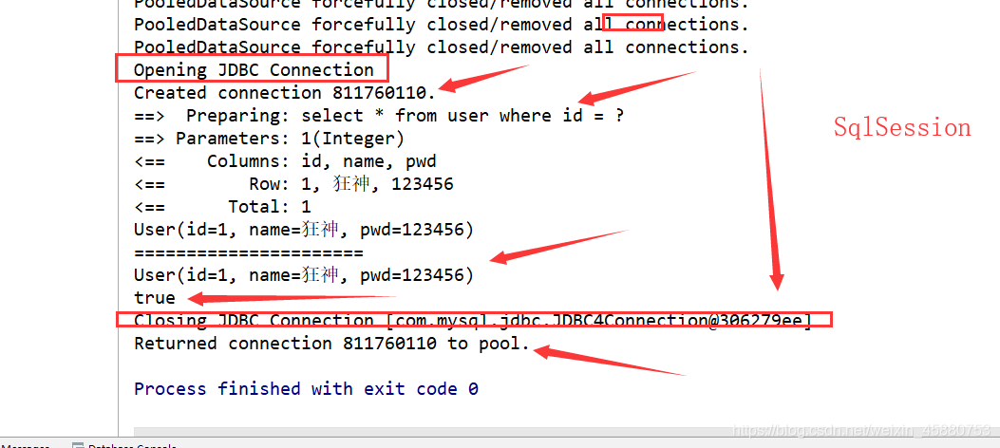
缓存失效的情况：
- 查询不同的东西
- 增删改操作，可能会改变原来的数据，所以必定会刷新缓存！
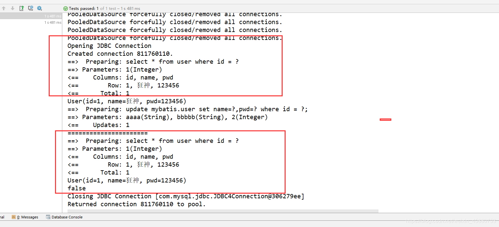
- 查询不同的Mapper.xml
- 手动清理缓存！
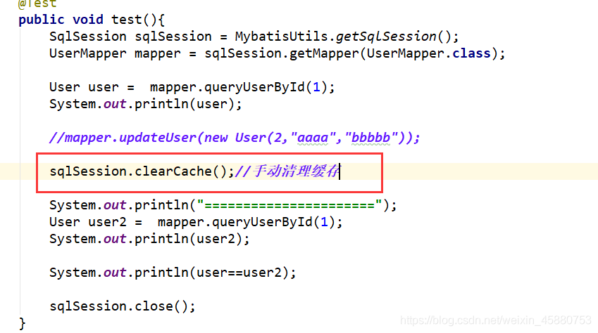
小结：一级缓存默认是开启的，只在一次SqlSession中有效，也就是拿到连接到关闭连接这个区间段！
一级缓存就是一个Map。
13.4 二级缓存
- 二级缓存也叫全局缓存，一级缓存作用域太低了，所以诞生了二级缓存
- 基于namespace级别的缓存，一个名称空间，对应一个二级缓存；
- 工作机制
- 一个会话查询一条数据，这个数据就会被放在当前会话的一级缓存中；
- 如果当前会话关闭了，这个会话对应的一级缓存就没了；但是我们想要的是，会话关闭了，一级缓存中的数据被保存到二级缓存中；
- 新的会话查询信息，就可以从二级缓存中获取内容；
- 不同的mapper查出的数据会放在自己对应的缓存（map）中；
步骤：
开启全局缓存
1
2<!--显示的开启全局缓存-->
<setting name="cacheEnabled" value="true"/>在要使用二级缓存的Mapper中开启
1
2<!--在当前Mapper.xml中使用二级缓存-->
<cache/>也可以自定义参数
1
2
3
4
5<!--在当前Mapper.xml中使用二级缓存-->
<cache eviction="FIFO"
flushInterval="60000"
size="512"
readOnly="true"/>测试
问题:我们需要将实体类序列化！否则就会报错！
1
Caused by: java.io.NotSerializableException: com.kuang.pojo.User
小结：
- 只要开启了二级缓存，在同一个Mapper下就有效
- 所有的数据都会先放在一级缓存中；
- 只有当会话提交，或者关闭的时候，才会提交到二级缓冲中！
13.5 缓存原理
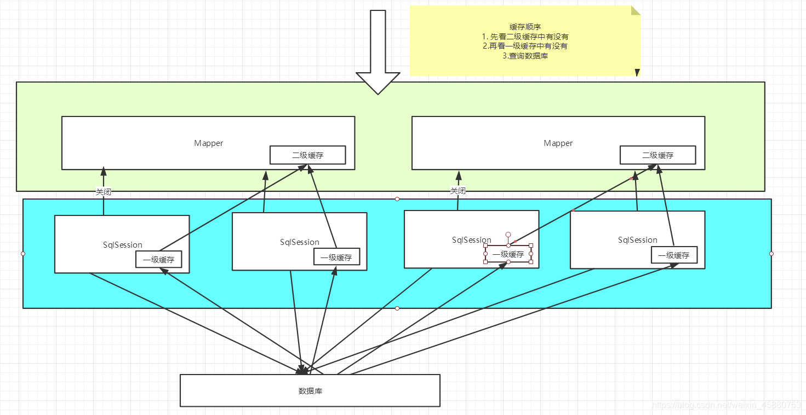
13.6 自定义缓存-ehcache
1 | |
要在程序中使用ehcache，先要导包！
1 | |
在mapper中指定使用我们的ehcache缓存实现！
1 | |
ehcache.xml
1 | |
本博客所有文章除特别声明外，均采用 CC BY-SA 4.0 协议 ，转载请注明出处！